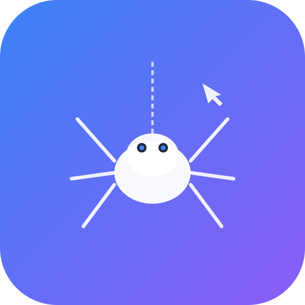

Open-source LLM Friendly Web Crawler
{{ JSON.stringify(crawlResult, null, 2) }}
{{ crawlError }}
Connect Claude, VS Code, Cursor, or any MCP client to crawl4ai.
{{ backendUrl }}/mcp/sse
Server-Sent Events transport
{{ wsUrl }}/mcp/ws
WebSocket transport
{{ tool.name }}
{{ tool.desc }}
{{ JSON.stringify({mcpServers: {crawl4ai: {transport: "sse", url: backendUrl + "/mcp/sse"}}}, null, 2) }}
Dua skenario integrasi: Crawl4AI sebagai Action atau Trigger di Zapier.
Crawl website sebagai Action dalam Zap Anda. Cocok untuk: schedule rutin, trigger dari form, email, dll.
{{ backendUrl }}/webhook/catch{"url": "https://target.com", "formats": ["markdown"]}content, response_time, links_countContoh: Google Form submission → Crawl website → Simpan hasil ke Google Sheets
Crawl4AI mengirim hasil crawl ke Zapier. Cocok untuk: notifikasi, alert, pipeline data otomatis.
https://hooks.zapier.com/hooks/catch/...curl -X POST {{ backendUrl }}/webhook/trigger \
-H "Content-Type: application/json" \
-d '{
"url": "https://example.com",
"zapier_respond_url": "https://hooks.zapier.com/hooks/catch/xxx/yyy"
}'
Jalankan server webhook sendiri di Render / Railway / VPS. Source: zapier-webhook/ di repo.
Render: Root: zapier-webhook
Railway: gunicorn server:app
{
"event": "crawl_complete",
"task_id": "a1b2c3d4",
"data": {
"url": "https://example.com",
"status": "success",
"content": "# Page Title...",
"format": "markdown",
"response_time": 142,
"links_count": 24
},
"timestamp": "2026-06-22T02:30:00Z"
}
{{ zapierResult }}
{{ zapierError }}
Jalankan MCP server crawl4ai sendiri di infrastruktur Anda.
docker build -t crawl4ai-mcp ./mcp-server docker run -p 8000:8000 crawl4ai-mcp
Deploy 1-click via Render:
# Set root: mcp-server # Build: pip install -r requirements.txt # Start: uvicorn main:app --host 0.0.0.0 --port $PORT
cd mcp-server pip install -r requirements.txt python main.py